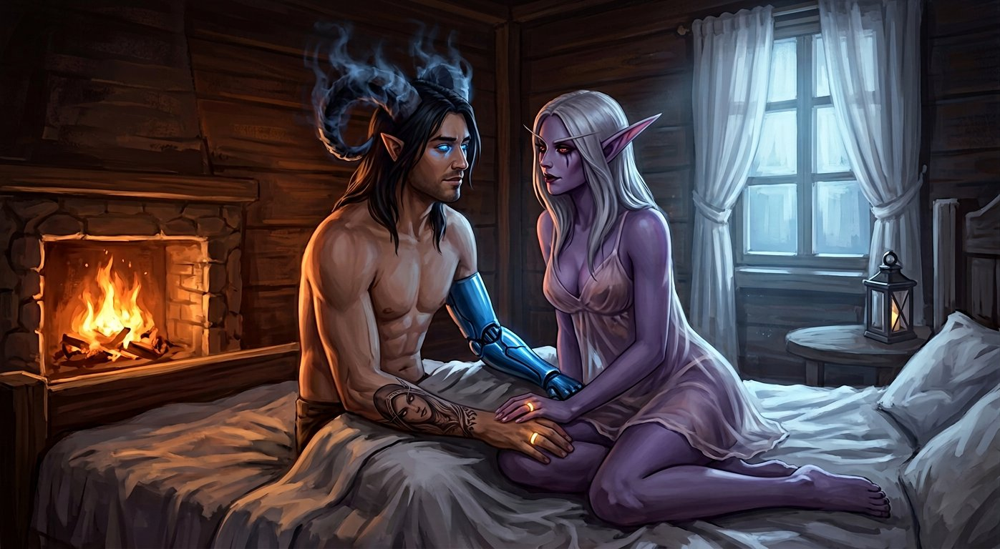

Capítulo Trinta e Cinco
Lua de mel
A casa de Mira era maior por dentro do que parecia por fora.
Não do jeito mágico — não do jeito que casas são maiores por dentro nos livros e nos jogos, com portais e dimensões dobradas e truques de arquitetura impossível. Era maior do jeito simples: tinha mais cômodos do que se esperava, do jeito que casas antigas têm, quando foram sendo construídas aos poucos, um quarto aqui, uma sala ali, um corredor que não estava no plano original mas que fez sentido quando alguém precisou de mais espaço.
E Mira mostrou todos.
— Varokh — disse ela, apontando para uma porta no fim do corredor. — Esse é o seu. Tem uma cama grande, uma janela que dá para o campo, e uma parede onde você pode pendurar o machado se quiser. A maioria das pessoas que ficam aqui gostam de ter a arma perto.
Varokh grunhiu. O grunhido significava "obrigado".
— Elyra — continuou Mira, apontando para outra porta. — O seu é do lado. Tem uma cama menor, uma mesa para você limpar as facas, e uma janela que dá para a horta. Se você quiser ajudar com as plantas em algum momento, a porta dos fundos dá direto.
Elyra sorriu. Aquele sorriso dela — provocativo, irônico — mas com algo a mais. Algo que parecia... gratidão.
— Obrigada — disse ela. E foi sincero.
E então Mira olhou para Nathan e Sylvanas. E sorriu de novo — aquele sorriso que era triste e feliz ao mesmo tempo, do jeito que sorrisos são quando carregam memória.
— E vocês dois — disse ela, apontando para a última porta do corredor, a maior, a que tinha uma janela que dava para o horizonte. — O de vocês é esse.
✦
O quarto era bonito.
Não luxuoso — Mira não parecia ser do tipo que gastava energia com luxo. Mas bonito do jeito simples, do jeito que coisas são bonitas quando são feitas com cuidado. Uma cama grande, com lençóis brancos e cobertores macios e travesseiros que pareciam nuvens. Uma janela larga que dava para o campo — para o verde, para o azul, para o horizonte que não acabava. Uma lareira pequena, com lenha empilhada ao lado. Uma mesa com uma jarra de água e dois copos. E cortinas — cortinas finas, brancas, que balançavam com o vento que entrava pela janela entreaberta.
E no centro da cama, dobrado com cuidado, havia um único cobertor extra. Grande. Suficiente para dois.
Sylvanas olhou para Nathan. Nathan olhou para Sylvanas. E nenhum dos dois precisou dizer nada, porque o que precisava ser dito já tinha sido dito — nos olhares, nos silêncios, nos anéis que pulsavam no mesmo ritmo nos dedos deles.
— Fica à vontade — disse Mira, da porta. — Eu vou sair por um tempo. Tenho coisas para resolver no campo, do outro lado do vale. Volto amanhã, talvez depois. A casa é de vocês.
— Você vai sozinha? — perguntou Nathan.
— Sempre vou sozinha — disse ela, com um sorriso. — Mas eu volto. Sempre volto.
E então ela se virou. E saiu. E os quatro ficaram na casa — Varokh no quarto dele, Elyra no dela, e Nathan e Sylvanas no deles.
Sozinhos.
Pela primeira vez desde que tinham chegado — desde que tinham atravessado a porta, desde que tinham pisado nesse mundo com céu azul e grama verde — eles estavam verdadeiramente sozinhos. Sem Varokh de vigia do lado de fora da tenda. Sem Elyra provocando na fogueira. Sem a Gorja pesando em cada respiração.
Apenas eles. E o quarto. E a cama. E o horizonte pela janela.
✦
Sylvanas tirou a armadura primeiro.
Não com pressa — com alívio. Do jeito que se tira algo que se carregou por tempo demais. Peça por peça. A couraça. As ombreiras. Os braceletes. As grevas. Cada peça caindo no chão com um baque surdo, metálico, que ecoava no quarto vazio como se fosse o som de algo sendo largado para sempre.
E quando a última peça caiu, ela ficou ali. De pé. No meio do quarto. Com a roupa leve por baixo — uma túnica escura, fina, que cobria o corpo dela sem esconder, que apenas existia, do jeito que roupas de dormir existem.
E Nathan olhou para ela. Como sempre olhava — como se ela fosse a coisa mais importante do mundo. Como se cada centímetro dela fosse algo que ele nunca ia cansar de ver.
— Você é linda — disse ele.
Sylvanas olhou para ele. Com aqueles olhos vermelhos que tinham visto tudo e que, mesmo assim, ainda se surpreendiam com ele.
— Eu sou roxa — disse ela.
— Eu sei.
— E morta.
— Eu sei.
— E isso não te incomoda?
— Sylvanas. — Ele se aproximou. Devagar. Do jeito que ele se aproximava — sem pressa, sem cálculo, apenas indo. — Eu tatuei o seu rosto no braço quando você era pixels. Quando você era código e polígonos e uma voz gravada num estúdio em algum lugar da Califórnia. E eu te amava. E agora você é real. E você está aqui. E você é minha. E eu sou seu. E se isso não é a coisa mais linda que já aconteceu no universo, eu não sei o que é.
E ela sorriu. Não um sorriso pequeno. Não um sorriso quase imperceptível. Um sorriso verdadeiro. Inteiro. Do tipo que começa nos olhos e desce para a boca e que não precisa de permissão para existir.
E puxou ele para perto.
✦
Nathan tirou o sobretudo.
E a camisa. E ficou ali — de calça e nada mais, com os chifres de sombra e as asas do Vazio e a prótese azul no braço esquerdo e a tatuagem no antebraço direito e o anel brilhando suavemente no dedo.
E Sylvanas olhou para ele. Do jeito que ela olhava — como se ele fosse a coisa mais real do mundo. Como se cada cicatriz, cada marca, cada parte dele fosse algo que ela nunca ia cansar de ver.
— O anel — disse ela, baixinho, segurando a mão dele. — Ele ainda está brilhando.
— Está.
— Por quê?
Nathan pensou. Não muito — apenas o suficiente para encontrar a resposta certa.
— Porque eu estou perto de você — disse ele. — E o anel sabe. O anel sente o que eu sinto. E o que eu sinto agora... — Ele parou. Olhou para ela. Para o rosto dela, para os olhos vermelhos, para as marcas abaixo dos olhos, para o cabelo prateado caindo sobre os ombros, para a túnica escura que cobria o corpo dela sem esconder. — O que eu sinto agora é demais para o anel não brilhar.
Sylvanas olhou para o próprio anel. E o dela estava brilhando também. No mesmo ritmo. No mesmo pulso. Como se os dois anéis — e as duas pessoas — fossem um só.
— Eu nunca senti isso — disse ela, baixinho. — Em séculos. Em toda a minha existência. Eu nunca senti... isso. Essa calma. Essa paz. Essa certeza de que eu estou no lugar certo, com a pessoa certa, e que nada — nada — vai mudar isso.
— É lua de mel — disse Nathan, sorrindo.
— O quê?
— Lua de mel. É uma coisa que os casais fazem na Terra. Depois de casar, eles vão para algum lugar bonito. Ficam sozinhos. Aproveitam. Sem o mundo incomodando. Sem nada além deles.
Sylvanas pensou. E então sorriu — aquele sorriso que era só dela, que era só dele, que era só deles.
— Então isso é lua de mel — disse ela. — Porque eu não quero que o mundo incomode agora. Eu não quero nada além de você.
E puxou ele para a cama.
✦

Eles se deitaram.
Não para dormir — não ainda. Apenas para existir. Para estar. Para sentir o peso dos corpos um no outro, o calor da pele (a dele quente, a dela fria, e os dois se encontrando no meio), o pulsar dos anéis nos dedos, o som da respiração um do outro.
Sylvanas deitou a cabeça no peito de Nathan. Do jeito que ela deitava quando queria ouvir o coração dele — aquele coração que batia, que era vivo, que era real, que era a prova constante de que ele existia. E ela ouviu. Batida por batida. E o peito dela — aquele peito que não deveria bater, que tinha parado de bater há séculos — pulsou junto. Suave. Breve. Do jeito que pulsava quando os anéis brilhavam.
— Nathan — disse ela, baixinho.
— Hm.
— Os anéis estão brilhando de novo.
— Eu sei.
— Por quê?
Ele sorriu. Beijou a testa dela. Aquele ponto entre o capuz — que ela tinha tirado, finalmente, pela primeira vez em dias — e o cabelo prateado, onde a pele era mais macia.
— Porque eu estou feliz — disse ele. — E o anel sabe.
E Sylvanas fechou os olhos. E sorriu. E o peito dela pulsou de novo — uma vez, duas, três — no mesmo ritmo do coração dele.
E os anéis brilharam. Suave. Breve. Dourado. Do jeito que brilham quando duas pessoas que se amam estão exatamente onde deveriam estar.
✦
Mais tarde — muito mais tarde, quando a lua já tinha subido e o quarto estava banhado numa luz prateada que entrava pela janela — Nathan ficou deitado de costas, e Sylvanas ficou deitada sobre ele, a cabeça no peito dele, o braço dela atravessado sobre a barriga dele, os dedos dela entrelaçados nos dedos dele, os anéis pulsando juntos.
— Sylvanas.
— Hm.
— Se o Colecionador vier...
— Ele vai vir.
— Eu sei. — Ele parou. Pensou. — Mas quando ele vier, eu quero que você saiba uma coisa.
— O quê?
— Que eu não vou. — Ele apertou a mão dela. — Que eu não volto para a Terra. Que eu não aceito nenhuma proposta. Que nenhum preço que ele oferecer vai ser suficiente. Porque o que eu tenho aqui — ele olhou para ela, para o rosto dela, para os olhos vermelhos que olhavam para ele na luz da lua — vale mais do que qualquer mundo. Do que qualquer vida. Do que qualquer coisa.
Sylvanas levantou a cabeça. Olhou para ele. De perto. Tão perto que ele via as marcas abaixo dos olhos dela, as pequenas imperfeições que a distância escondia e que a proximidade revelava.
— E se ele te obrigar?
— Ele não vai.
— E se ele tentar?
— Então a gente enfrenta. Juntos. — Ele levantou a mão dela. Beijou os dedos. Um por um. Do jeito que se beija algo precioso. — Porque agora a gente tem isso. — Ele olhou para os anéis. — E isso é mais forte do que qualquer Colecionador. Do que qualquer porta. Do que qualquer mundo.
Sylvanas encostou o rosto no peito dele. Do jeito que só fazia com ele. Do jeito que ninguém mais no mundo — nos mundos — jamais tinha visto.
— Eu te amo — disse ela, baixinho, abafada contra a pele dele.
Três palavras. Simples. Diretas. Do jeito que ela dizia as coisas — quando dizia. Porque ela não dizia sempre. Não porque não sentia. Mas porque sentir era suficiente, na maioria das vezes, e porque palavras eram pequenas para o que ela sentia.
Mas agora — agora, nessa noite, nessa cama, nesse quarto, nesse mundo com céu e lua e vento — agora ela disse. Porque havia momentos em que as palavras, mesmo pequenas, mereciam ser ditas.
E Nathan sorriu. E apertou ela contra ele. E disse:
— Eu também. Desde sempre. E para sempre.
E os anéis brilharam. Uma última vez. Forte. Intenso. Do jeito que brilham quando duas pessoas dizem a coisa mais verdadeira do mundo e o universo inteiro concorda.
E então eles dormiram.
Juntos. Com os anéis pulsando no mesmo ritmo. Com o coração dele batendo e o peito dela pulsando junto. Com a lua entrando pela janela e banhando os dois em prata. Com o vento balançando as cortinas brancas. Com o mundo em paz.
E do lado de fora, Varokh estava sentado na varanda. Olhando para a lua. Com o machado no colo. De vigia. Como sempre.
Porque algumas coisas não mudam. E porque Varokh tinha aprendido, em quatrocentos anos, que a coisa mais nobre que um guerreiro pode fazer não é lutar. É guardar.
E o que ele guardava, naquela noite, era a lua de mel de duas pessoas que tinham finalmente encontrado o que procuravam.
E isso, ele pensou, valia mais do que qualquer batalha.